Certifying the audiometric booth test environment is a BE responsibility in support of the Base Hearing Conservation Program (HCP) to determine what the background noise levels are inside the booth. The audiometric booth survey is an octave band survey which is performed using equipment conforming at least to Type 1 and Order 3 requirements of the latest approved ANSI Standard. Measurements of the background SPLs in the audiometric test room must be taken annually.
The primary difference between a typical octave band survey and an audiometric booth survey is that the audiometric booth survey only surveys five of the eight octave bands. Each octave band has a maximum level that is allowed before further action must be taken to attempt to bring the measured levels to acceptable levels.
Audiometric testing must be performed by licensed or certified personnel and conducted in a certified testing environment with background octave band SPLs not greater than the levels shown below, IAW AFOSH Std 48-20.
